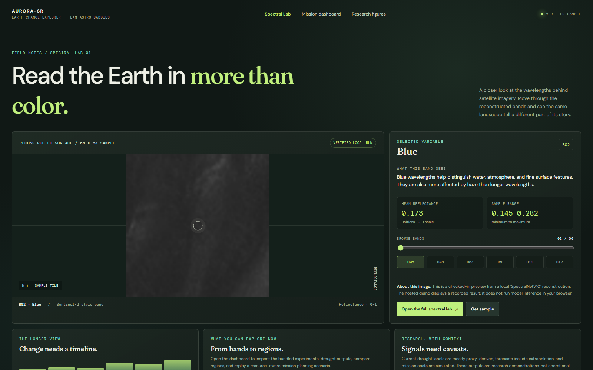
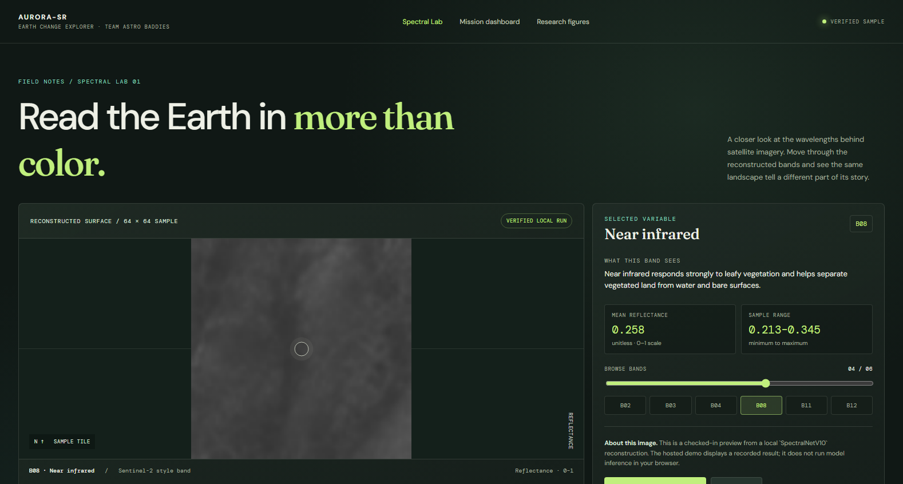
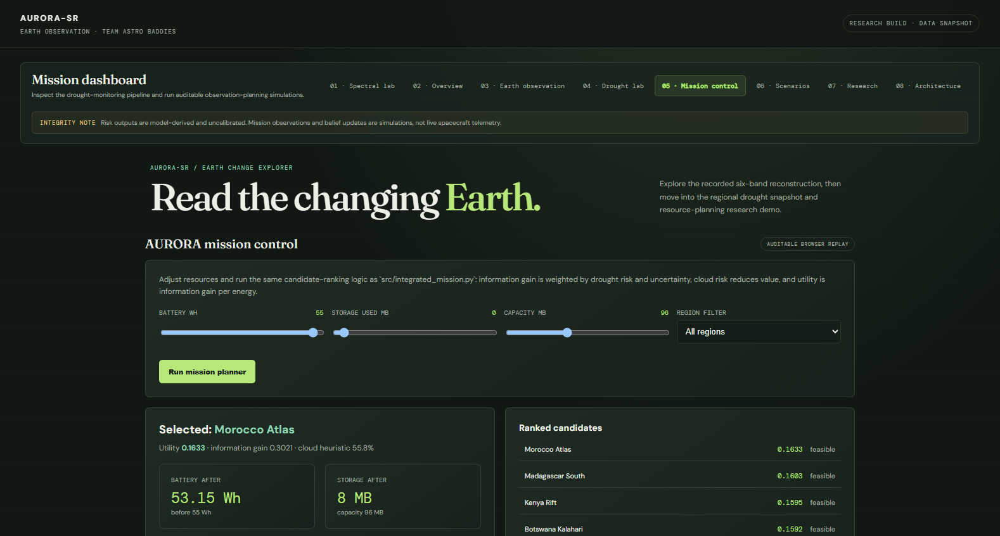
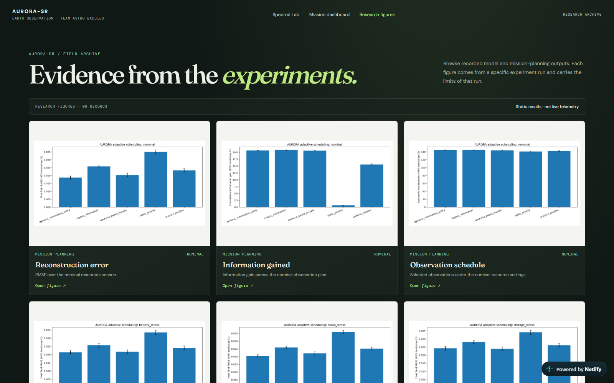

A short tour of the Spectral Lab, regional mission dashboard, and research outputs.
A useful Earth observation tool should help people choose a measured variable, see where it changes over time, estimate how much it changes, and understand the strength of the evidence.
Move through blue, green, red, near-infrared, and shortwave-infrared bands. Each view reveals different surface information.

Adjust the battery and storage limits. The planner ranks candidate regions using its documented utility score.

The research gallery groups mission-planning and drought-model results from recorded experiments.

The current demo combines six-band spectral reconstruction, bundled regional drought outputs, and a simulated observation planner.